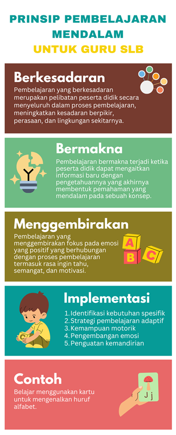

Pengantar
Pada Kegiatan Belajar 2 ini, Bapak/Ibu akan mempelajari tentang pendekatan CPA (Concrete–Pictorial–Abstract), prinsip UDL (Universal Design for Learning), dan Pembelajaran Mendalam. Materi ini penting karena membantu guru merancang pembelajaran yang terstruktur, inklusif, dan bermakna. Dengan memahami topik materi berikut, Bapak/Ibu dapat mengembangkan strategi pembelajaran yang memudahkan murid memahami konsep secara bertahap, mengakomodasi keberagaman kebutuhan belajar, serta mendorong pemahaman yang mendalam dan berkelanjutan.
1. Pendekatan CPA (Concrete–Pictorial–Abstract) dan Prinsip UDL (Universal Design for Learning)
CPA adalah pendekatan bertahap dalam pembelajaran matematika yang sangat relevan diterapkan di SDLB. Melalui tahapan konkret, piktorial, hingga abstrak, murid diarahkan untuk memahami konsep numerasi secara bertahap sesuai dengan kemampuan dan gaya belajarnya. Tahapan CPA ini membantu murid SLB, baik dengan hambatan pendengaran maupun dengan hambatan intelektual, dalam memahami konsep numerasi dari yang paling nyata hingga yang simbolik.
- Konkret (Concrete)
Murid berinteraksi langsung dengan benda nyata seperti balok angka, kancing, stik, atau alat peraga lainnya yang sesuai dengan ketunaan. - Piktorial (Pictorial)
Murid melihat representasi visual dari benda konkret dalam bentuk gambar, diagram, atau simbol visual. - Abstrak (Abstract)
Murid mulai diperkenalkan dengan angka dan simbol matematika yang lebih formal sebagai tahap akhir pemahaman.
UDL adalah kerangka kerja pedagogis yang menjamin semua murid memiliki akses dan kesempatan yang setara dalam pembelajaran. Dalam modul ini, prinsip UDL diterapkan dengan
- Multiple Means of Representation,
yang mana informasi disampaikan tidak hanya melalui teks, tetapi juga berupa gambar, ilustrasi, audio, dan (jika memungkinkan) bahasa isyarat. - Multiple Means of Action and Expression,
yang mana guru didorong memberi ruang kepada murid untuk mengekspresikan pemahaman dengan cara yang sesuai melalui praktik, karya visual, atau gerakan. - Multiple Means of Engagement,
yang mana modul ini menyarankan kegiatan belajar yang kontekstual, menyenangkan, dan merangsang rasa ingin tahu murid.
2. Pembelajaran Mendalam (PM)
Mengacu pada Naskah Akademik Pembelajaran Mendalam Tahun 2025 yang diterbitkan oleh Kementerian Pendidikan Dasar dan Menengah, definisi Pembelajaran Mendalam beserta prinsip-prinsipnya adalah sebagai berikut.
a. Definisi Pembelajaran Mendalam (PM)
Pembelajaran Mendalam didefinisikan sebagai pendekatan yang memuliakan dengan menekankan pada penciptaan suasana belajar dan proses pembelajaran berkesadaran, bermakna, dan menggembirakan melalui olah pikir, olah hati, olah rasa, dan olah raga secara holistik dan terpadu. Kerangka kerja PM terdiri atas empat komponen, yaitu (1) dimensi profil lulusan, (2) prinsip pembelajaran, (3) pengalaman belajar, dan (4) kerangka pembelajaran. Profil lulusan terdiri atas delapan dimensi, yaitu (1) keimanan dan ketakwaan kepada Tuhan Yang Maha Esa, (2) kewargaan, (3) penalaran kritis, (4) kreativitas, (5) kolaborasi, (6) kemandirian, (7) kesehatan, dan (8) komunikasi. Dimensi profil lulusan merupakan kompetensi utuh yang harus dimiliki oleh setiap murid setelah menyelesaikan proses pembelajaran dan pendidikan.
Prinsip PM terdiri atas berkesadaran (mindful), bermakna (meaningful), dan menggembirakan (joyful). Prinsip-prinsip PM akan mampu memuliakan guru, murid, dan pemangku kepentingan pendidikan lain serta memberikan pengalaman belajar memahami, mengaplikasi, dan merefleksi. Guru memberikan kesempatan murid mendapatkan pengalaman belajar untuk proses perolehan pemahaman, mengaplikasi dalam berbagai konteks, serta merefleksikan PM. Komponen kerangka pembelajaran terdiri atas praktik pedagogis, lingkungan pembelajaran, kemitraan pembelajaran, dan pemanfaatan teknologi digital.
b. Prinsip Berkesadaran, Bermakna, dan Menggembirakan dalam PM
PM menerapkan prinsip pembelajaran yang berkesadaran, bermakna, dan menggembirakan. Masing-masing berkontribusi dalam memberikan pengalaman belajar yang komprehensif dan mendalam.

- Berkesadaran
Prinsip berkesadaran telah diperkenalkan oleh Ellen Langer pada tahun 1997. Pembelajaran tidak hanya melibatkan pemahaman informasi, tetapi juga bagaimana individu terlibat sepenuhnya secara mental dan fisik dalam proses pembelajaran, membuka diri terhadap pengalaman baru, dan berpikir dengan cara yang lebih terbuka dan fleksibel. Prinsip berkesadaran ini relevan dengan PM sebagai pemikiran yang berkelanjutan sebagai pendekatan holistik untuk mengaitkan konten pembelajaran dengan intelektual, emosi dan nilai-nilai (Hermes & Rimanoczy, 2018). Pembelajaran Mendalam memberikan peluang keterlibatan murid secara aktif, menstimulasi refleksi dalam pembelajaran, dan aplikasi pengetahuan yang lebih global (Fullan et al., 2018). Hal ini selaras dengan prinsip berkesadaran dalam melibatkan murid baik sebagai individu ataupun anggota masyarakat. Pembelajaran yang berkesadaran merupakan pelibatan murid secara menyeluruh dalam proses pembelajaran, meningkatkan kesadaran berpikir, perasaan, dan lingkungan sekitarnya. Bentz (1992) menyampaikan bahwa PM menstimulasi proses emosional, intelektual, mental, fisik, sosial dan personal murid. - Bermakna
Pembelajaran bermakna telah diperkenalkan oleh David Ausubel pada tahun 1963. Pembelajaran bermakna akan lebih efektif jika informasi baru yang dipelajari dapat dikaitkan dengan pengetahuan atau pengalaman yang sebelumnya sudah dimiliki oleh murid. Prinsip ini relevan dengan PM sebagai cara untuk memahami makna, sehingga meningkatkan efisiensi dan retensi jangka panjang (Kovac̄ et al., 2023). Pembelajaran bermakna terjadi ketika murid dapat mengaitkan informasi baru dengan pengetahuannya yang akhirnya membentuk pemahaman yang mendalam pada sebuah konsep. Fullan et al. (2018) mengaitkan pembelajaran dengan pembelajaran bermakna pada konteks relevansi aktivitas pembelajaran dengan dunia nyata, mengaitkan kontribusi pengetahuan murid pada berbagai konteks (lokal, nasional, regional, dan global), dan pemanfaatan lingkungan sekitar untuk pembelajaran. Pembelajaran Mendalam memiliki prinsip pembelajaran bermakna karena mengutamakan pemahaman materi secara menyeluruh, tidak sekedar menghafal. Ketika murid terlibat dalam pembelajaran bermakna, murid akan aktif untuk membuat keterkaitan, menganalisis, dan sintesis informasi yang merupakan prinsip PM. - Menggembirakan
Ahli-ahli pendidikan seperti John Dewey (1936) dan Howard Gardner (1983) menekankan bahwa pembelajaran relevan dengan kehidupan nyata individu dan mengutamakan pembelajaran yang aktif serta pengalaman langsung baik secara emosional maupun intelektual. Michael Fullan dalam berbagai tulisannya (2014 dan 2018) tentang PM menyatakan pentingnya menciptakan lingkungan pembelajaran yang mendalam, bermakna, dan menggembirakan, sehingga murid terlibat dalam proses pembelajaran yang mendalam. Pembelajaran Mendalam akan bermakna untuk individu dalam meningkatkan motivasi dan menyenangkan (Kovac̄ et al., 2023). Pembelajaran yang menggembirakan fokus pada emosi yang positif yang berhubungan dengan proses pembelajaran termasuk rasa ingin tahu, semangat, dan motivasi. Pembelajaran Mendalam mempercepat rasa nyaman karena memberikan tantangan kepada murid untuk mengeksplorasi ide-ide kompleks. Ketika murid mengalami belajar yang interaktif, aktif, serta terpusat pada murid, mereka akan termotivasi untuk memahami secara mendalam materi pembelajaran, meningkatkan retensi dan pemahaman.
Bapak/Ibu yang hebat,
agar pemahaman Bapak/Ibu lebih kuat, silakan menonton
Video Reflektif terkait Prinsip Pembelajaran Mendalam